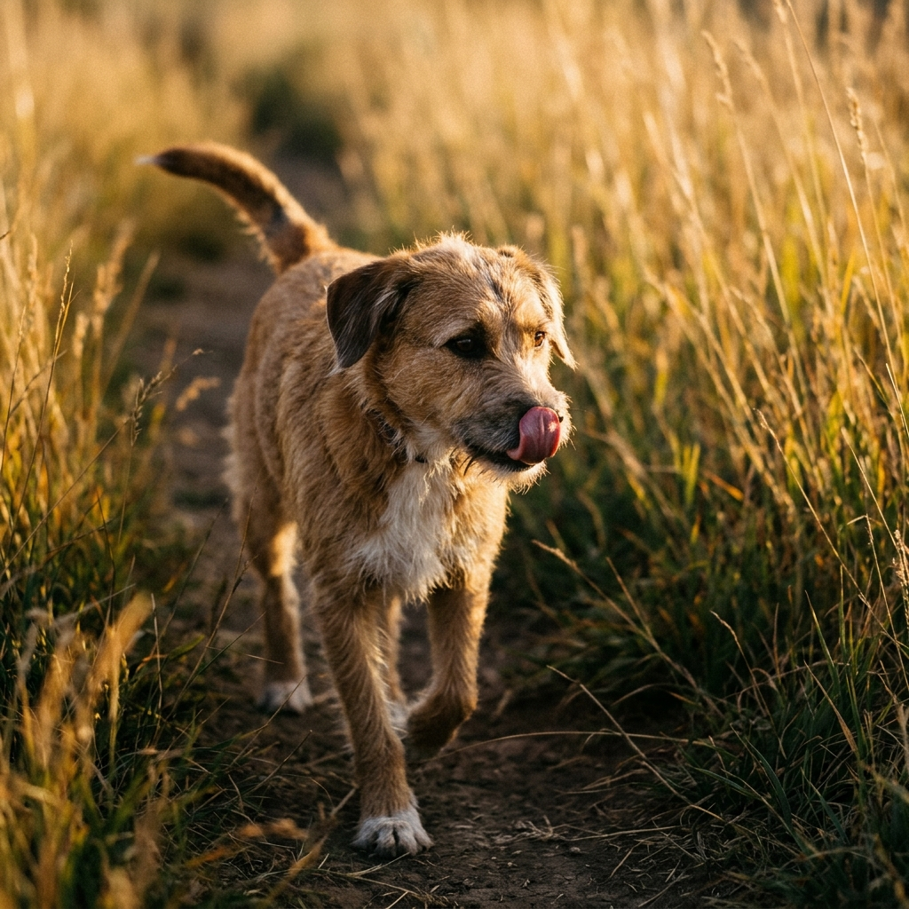

¿Cómo saber si tu perro es feliz? Señales cotidianas de bienestar en casa
Más allá de mover la cola, su forma de dormir, olfatear, pedir espacio y relacionarse contigo muestra qué tan tranquilo y seguro se siente cada día.
Leer másLecturas claras sobre alimentación, paseos, prevención y convivencia para acompañarlo desde cachorro hasta su etapa mayor.

Más allá de mover la cola, su forma de dormir, olfatear, pedir espacio y relacionarse contigo muestra qué tan tranquilo y seguro se siente cada día.
Leer más15 de 15 artículos